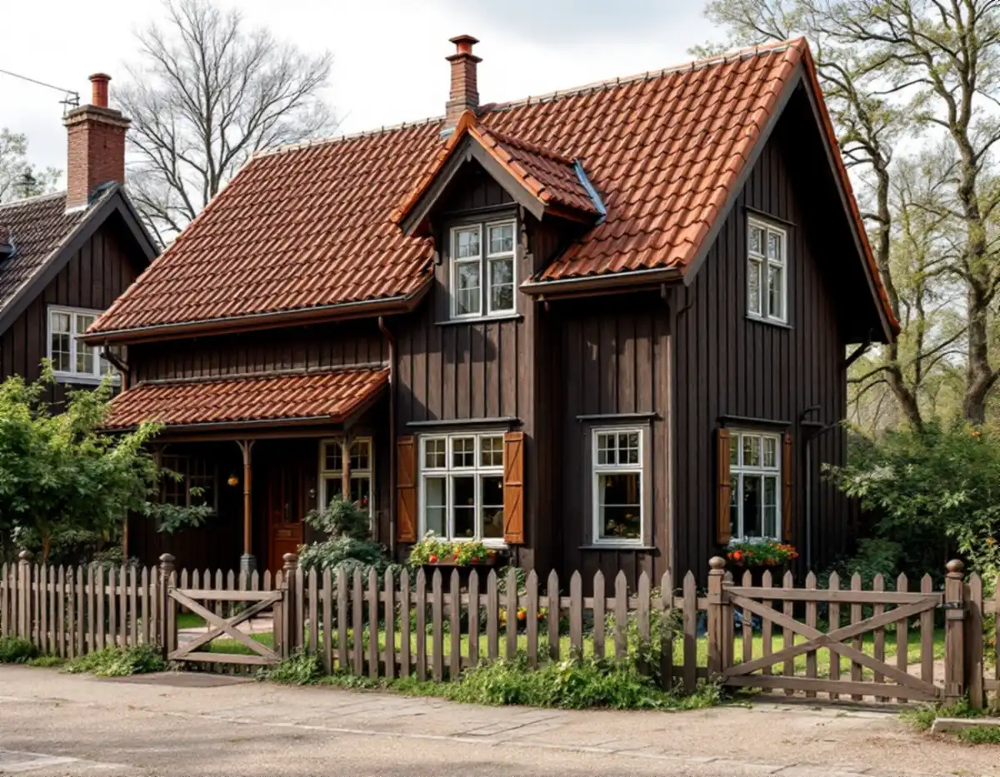
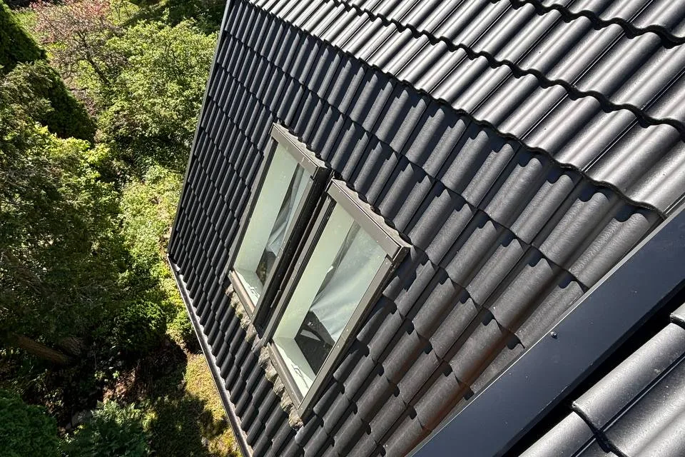

Besiktning med teglet i fokus
Vi tar reda på om taket har enkupigt eller tvåkupigt tegel och hur stor del av pannorna som håller.
I Enskede innebär en takrenovering nästan alltid att ett tegeltak på ett hus byggt efter typritning läggs om: pannorna ner, nytt underlag, beslagen bytta och teglet tillbaka. Eftersom Gamla Enskede är riksintresse för kulturmiljövården är målet att taket ska se likadant ut efteråt – i samma röda tegel, med samma takfall.

Gamla Enskede började byggas 1908 som Stockholms första trädgårdsstad, efter Per Olof Hallmans stadsplan från 1907. Tomterna upplät staden med tomträtt, och till dem hörde arkitektritade typhus med färdiga kostnadsförslag. Kärnan byggdes 1908–13, men utbyggnaden pågick ända till 1945.
Många av de första husen restes av självbyggare – ofta timmermän, byggnadssnickare och murare som flyttade ut från innerstadens hyreskaserner. Fristående enfamiljshus blev den vanligaste hustypen, men det byggdes också dubbelhus och några av landets första radhus.
Söder om kärnan fortsatte bebyggelsen. Enskededalen byggdes i huvudsak 1912–26 med 534 småhus, varav ungefär fyra av fem ritades av Gustav Petterson. På Enskedefältet uppfördes mer än 400 småstugor genom självbyggeri 1930–32, och nära Sockenplan tillkom ytterligare småstugor 1931–40 efter Edvin Engströms typritningar.

Stadsmuseets inventering av Gamla Enskede från 1970-talet beskriver typhusen ett efter ett, och för flera av dem anges samma taktäckning: tvåkupigt rött tegel. Det gäller sadeltak med kupa, brutna tak, burspråk, verandor och förstukvistar. Från början hade alla hustyper i området enhetliga fasad- och takmaterial.
Småstugorna på Enskedefältet fick i stället enkupigt rött lertegel ovanpå fasader av oljemålad träpanel. Stadens vägledning för småstugeområden nämner både enkupigt och tvåkupigt tegel och visar exempel på mansardtak klädda med tegel. Skillnaden syns på nära håll och är viktig när trasiga pannor ska ersättas.
På hus som är mer än hundra år gamla är det oftast läkt, papp och ränndalar som sviktar, medan hela tegelpannor i regel går att återanvända.
Radhusen vid Margaretavägen, uppförda 1908–09, hör till de första i Sverige. Det var en ovan bostadsform – husen gick först inte att sälja och fick hyras ut. Dubbelhusen blev däremot populära direkt eftersom de var billigare att bygga än en fristående villa. AB Stockholms Trädgårdsstäder uppförde 26 dubbelhus med 52 bostäder längs Krokvägen, Ängsvägen, Skogsvägen och Lilla Gränd.
På ett dubbelhus eller radhus är taket en sammanhängande yta som delas av flera ägare. Lägger bara ena halvan om sitt tak krävs en noggrann anslutning mot grannens del, både i tegel och i underlag. Det enklaste är att göra båda halvorna samtidigt, men det går att dela upp arbetet.
Gamla Enskede (AB 112) är ett av fem småhusområden i Stockholm som Riksantikvarieämbetet har pekat ut som riksintresse för kulturmiljövården. Bland områdets värdebärande karaktärsdrag nämner stadens översiktsplan bebyggelsens enhetliga proportioner, takfall och tak- och fasadmaterial.
Sedan 1 december 2025 är det i regel lovfritt att byta taktäckningsmaterial eller kulör på ett en- eller tvåbostadshus, enligt Boverket. Undantaget gäller inte om huset eller området har skyddsbestämmelser, är särskilt värdefullt enligt PBL 8 kap. 13 § eller omfattas av utökad lovplikt. Höjs taket kan det räknas som tillbyggnad, så stäm av med kommunen innan takets form eller höjd ändras. Stockholms stad anger att lov behövs för annars lovfria åtgärder inom riksintresse – alltså i Gamla Enskede.
Att lägga tillbaka samma tegel på nytt underlag ändrar inte husets utseende. Vill du byta till betongpannor eller plåt, sätta in takfönster eller bygga en ny kupa behöver det prövas. Läs mer om bygglov vid takbyte.
Gaturummen i Gamla Enskede präglas av häckar, alléträd och trädgårdar med uppvuxen vegetation. Gamla fruktträd och lövträd nära husen ger mycket löv i rännor och ränndalar på hösten, och skuggiga takfall får lättare mossa.
Gatorna inne i området är smala och slingrande, och tomterna små. Ställning, container och leveranser planerar vi därför i god tid, ofta tillsammans med grannarna. I Enskededalen, som ligger på flack mark mellan Stockholmsåsen och ett skogsområde, är logistiken oftast enklare.
Vi börjar med att räkna och märka upp teglet, eftersom tvåkupigt och enkupigt inte ska blandas. Pannorna tas ner, läkt och underlagspapp rivs, och råsponten byts där den är skadad. Sedan läggs ny papp, ny läkt och teglet tillbaka, kompletterat med begagnade eller nya pannor av samma typ.
Kupor, burspråk och verandor har ofta egna små takytor som tas med i samma arbete. Beslag vid skorsten och mellan parhushalvorna görs om, liksom fotplåt, vindskivor och hängrännor och stuprör. Mer om metoden finns under takrenovering, och om oss som firma under takläggare i Enskede.
Vi tar reda på om taket har enkupigt eller tvåkupigt tegel och hur stor del av pannorna som håller.
För hus i Gamla Enskede går vi igenom om åtgärden ändrar utseendet och om bygglov behöver sökas.
På dubbelhus och radhus pratar vi igenom anslutningen mellan halvorna och om båda tak ska göras samtidigt.
Teglet märks och staplas, och läkt, papp och skadad råspont byts mot nytt.
Hela pannor läggs tillbaka och luckorna fylls med tegel av samma typ och kulör.
Beslag, fotplåt och rännor monteras, och vi visar dig taket innan vi plockar ner ställningen.
Rotavdraget ger 30 procent av arbetskostnaden tillbaka, med ett tak på 50 000 kronor per person och år – och högst 75 000 kronor om du också använder rutavdrag. Material och resor ingår inte. Vi gör avdraget direkt på fakturan.
Äger två personer huset kan båda använda sitt eget utrymme. I ett dubbelhus där halvorna har olika ägare gör var och en avdrag för arbetet på sin egen halva, även om båda tak läggs om samtidigt. Mer om reglerna finns på rotavdrag för takarbete.
På ett Enskedehus beror kostnaden mest på hur mycket av teglet som kan läggas tillbaka och hur svårt det är att hitta kompletterande pannor av rätt typ. Brutna tak, kupor, burspråk och verandor ger fler detaljer att täta, och smala gator kan påverka hur ställning och container kan placeras. Se vad en takrenovering kostar och prova kalkylatorn för takbyte.
Takbyte, besiktning och plåtarbeten.
Takläggare i Enskede →Så fungerar en omläggning.
Takrenovering och takomläggning →Det här styr priset.
Vad kostar en takrenovering? →Räkna på takytan och ROT.
Takbyte-kalkylator →Långbro, Herrängen och Långsjö.
Takrenovering i Älvsjö →Stuvsta, Snättringe och Skogås.
Takrenovering i Huddinge →Saltsjöbaden, Boo och Älta.
Takrenovering i Nacka →